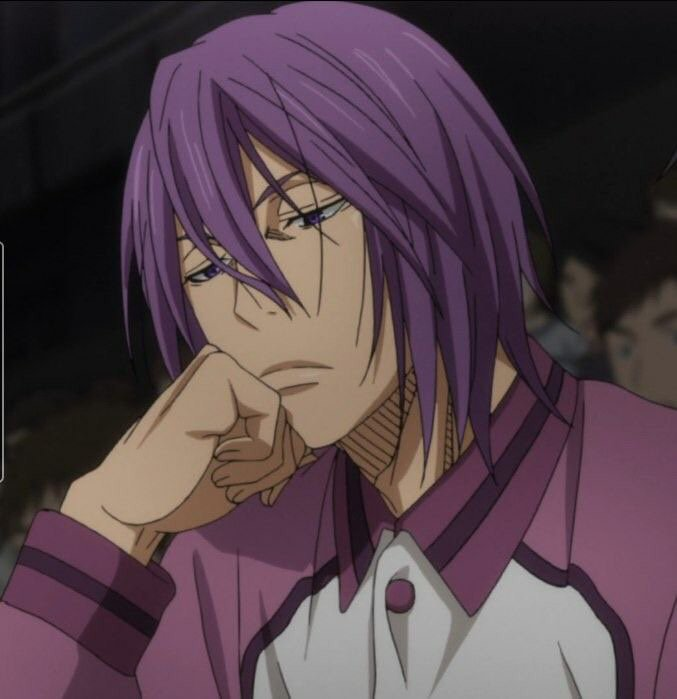

¡Conoce algunos datos sobre los personajes iconicos de este grandioso anime!
Kise Ryota
fue un miembro del club de baloncesto de la Escuela Media Teikō y de la Generación de los Milagros donde jugó como alero, ahora juega para el club de baloncesto del Instituto Kaijō.
Es muy ágil y fuerte. Su capacidad de imitación requiere una cosa: que él es un poco a la par con las habilidades físicas de su objetivo. Es por esto que a pesar de su carrera en el baloncesto se corta en comparación con sus antiguos compañeros de equipo que es capaz de reunir multitud considerable de técnica y habilidad. El hecho de que él era capaz de copiar los movimientos de Aomine (aunque no con tanta potencia), muestra que él es aproximadamente igual de fuerte y hábil.
La razón real por la que puede jugar al baloncesto, es porque tiene la capacidad de copiar los movimientos de alguien en muy poco tiempo debido a su habilidad de comprensión visual.
Aomine Daiki
es el jugador estrella de la renombrada "generación de los milagros" y fue la primera luz de Kuroko en Teiko. Actualmente juega para la Academia Tōō.
Kagami y él se vuelven grandes rivales después de encontrarse en las preliminares del Interhigh y en la primera ronda de la Winter Cup.
Cuando Aomine era pequeño, empezó a jugar baloncesto en las calles. A medida que crecía comenzó a jugar baloncesto callejero, haciendo que su modo de juego fuera más flexible.
Tiene un talento natural para el baloncesto, Aomine es literalmente “un monstruo” en éste deporte, posee una insólita velocidad, es extremadamente fuerte, hábil y ágil control del balón, puede anotar desde cualquier posición, cambia su velocidad y dirección a placer. En términos de habilidad, es el jugador mas talentoso de la Generación de Milagros, pero no el mas fuerte ya que Akashi, su capitán en Teiko, es el jugador mas cercano en alcanzar la perfección en todos los términos del deporte.
Midorima Shintaro
fue un miembro de Teiko y de la Generación de los Milagros donde desempeñó el papel de vice-capitán. Ahora juega para el equipo Shutoku.
Es considerado un monstruo por sus contrincantes ya que no solo se basa en su gran habilidad para tirar, sino que también es un jugador rápido, fuerte e inteligente, capaz de engañar a un oponente simulando un tiro y yendo a un pase. También demostró una resistencia increíble pudiendo hacer muchos de sus tiros extra largos sin agotarse. En defensa también es un jugador muy fuerte llegando a superar a Kagami ,el cual, cabe destacar, es un jugador capaz de superar a todos los miembros de la Generación de Milagros.

Murasakibara Atsushi
Es un jugador de basketball que fue miembro de Teiko y de la Generación de los Milagros donde jugo como centro, incluso se dice que es el mejor centro de preparatoria actual. Ahora juega para Yōsen.
Murasakibara tal vez, sea uno de los personajes más altos de la serie puesto que éste incluso sobrepasa a Papa Mbaye Siki, lo que lo hace anormalmente alto para alguien de su edad. Tiene un aspecto bastante relajado y a su vez lo bastante flojo.
Murasakibara se basa principalmente en su altura para conseguir rebotes, bloquear tiros o mate. Porque él no "como" el baloncesto, que prefiere permanecer en defensa; pero incluso entonces, él no se siente como el bloqueo si no quiere. En los partidos importantes como en la Copa de Invierno, que se ve obligado a hacer su mejor y su habilidad se muestra realmente. Allí, se ve que los brazos de Murasakibara son especialmente larga hasta sus piernas que le permitan dar pasos gigantes para ponerse al día con facilidad y bloquear un tiro.
Akashi Seijuro
Fue el capitán de la generación de los milagros en la Secundaria Teiko. Actualmente juega como capitán y Base en la preparatoria Rakuzan, la escuela que ha ganado más torneos hasta ahora. Para él ganar es lo mismo que respirar; un personaje oscuro y autoritario que, pese a todo, es el único capaz de unir al resto de los milagros con sólo una llamada, según Takao él da miedo, y parece tener una ligera inestabilidad emocional/mental estando totalmente obsesionado con la excelencia en todo y el control absoluto hasta el punto de llamarse a sí mismo un ser absoluto, esto puede ser debido a las fuertes exigencias de su padre.
Posee el ojo del emperador, el cual es la capacidad sobrehumana de la vista, la contradicción de la respiración, ritmo cardíaco, sudor, los músculos por otra parte para entenderlo visiblemente y leer las acciones en el juego.
Kuroko Tetsuya
Es el protagonista principal del manga. Él era el Sexto Jugador Fantasma de la Generación de los Milagros en la Secundaria Teikō. Además de ser el miembro "fantasma" del equipo. Actualmente, es la nueva arma secreta de Seirin con el dorsal número 11. A pesar de que era un miembro esencial dentro del equipo de secundaria, a diferencia de sus ex-compañeros, la existencia de Kuroko dentro de éste era desconocida en gran parte a que él es muy pequeño, frágil y fácil de perder de vista.
Aunque Kuroko es extremadamente frágil, bastante débil y penosamente lento, los talentos de Kuroko le permiten jugar un papel central en cualquier equipo. La posesión de un ojo magníficamente atento, además de su capacidad de mezclar en forma invisible a cualquier entorno, Kuroko puede realizar pases imperceptibles y robos prácticamente imparables, meter el balón hacia y entre sus compañeros de equipo más rápido que los opositores puedan reaccionar.
Kagami Taiga
Es el segundo protagonista de la serie. Es la estrella y Ala-pívot de Seirin con el dorsal número 10. Es un jugador de primer año del instituto Seirin que durante la escuela media estudió en Estados Unidos siendo compañero y amigo de Kuroko Tetsuya. Él está decidido a derrotar a la Generación de los Milagros y convertirse en el mejor jugador de Japón. Más tarde, junto con Kuroko formaría parte del Equipo Espada de Vorpal.
Es un jugador de un talento increíble. Kagami es un jugador muy potente y rápido que es capaz de ejecutar los cortes rápidos. Sus reflejos son de primera categoría, ya que es capaz de reaccionar muy rápido cuando se enfrentan a un experto en manejo de la pelota. Gracias a su gran físico es capaz de saltar muy alto y aguantar mucho tiempo en el aire, y también es capaz de hacer grandes mates con mucha fuerza. Tiene una gran variedad de regates para dejar al defensor atrás.